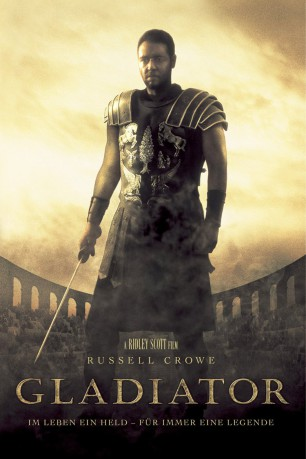
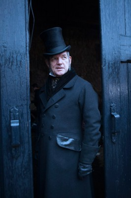

#6864 Gladiator
Auszeichnungen: 5 Oscars gewonnen für 7 Oscars nominiert 2 GoldenGlobes gewonnen 5 BAFTA-Awards gewonnen
 
 IMDB-Wertung: 8.5 / 10
IMDB-Wertung: 8.5 / 10  IMDB-TOP-Platzierung: 47
IMDB-TOP-Platzierung: 47  Tomatometer: 76
Tomatometer: 76  Metascore: 0
Metascore: 0 
Der gefeierte römische Feldherr Maximus wird vom sterbenden Kaiser Marcus Aurelius gebeten, seine Nachfolge anzutreten. Um dies zu verhindern, tötet Aurelius' Sohn seinen Vater und ordnet die Exekution von Maximus und seiner Familie an. Maximus gelingt die Flucht, verwundet wird er von einem Sklavenhändler gefangen genommen und muss sich fortan als Gladiator beweisen. Als Kampfmaschine hat er schließlich nur noch ein Ziel: Rache an seinem Peiniger zu nehmen...
Jahr: 2000
Dauer: 170 Minuten
FSK: 16
Land: USA Studio: DreamWorks DistributionTonspuren: DTS - ,
Untertitel: Deutsch,
Auflösung: 1080p (1920x816) Größe: 11980 MB
Genre: Action, Drama, Abenteuer
Regisseur:  Ridley Scott
Ridley Scott
Drehbuch: David Franzoni
Soundtrack:
Darsteller:
 Russell Crowe als Maximus
Russell Crowe als Maximus Joaquin Phoenix als Commodus
Joaquin Phoenix als Commodus Connie Nielsen als Lucilla
Connie Nielsen als Lucilla Oliver Reed als Proximo
Oliver Reed als Proximo Richard Harris als Marcus Aurelius
Richard Harris als Marcus Aurelius Derek Jacobi als Gracchus
Derek Jacobi als Gracchus Djimon Hounsou als Juba
Djimon Hounsou als Juba-  David Schofield als Falco
 John Shrapnel als Gaius
John Shrapnel als Gaius Tomas Arana als Quintus
Tomas Arana als Quintus Ralf Moeller als Hagen
Ralf Moeller als Hagen Spencer Treat Clark als Lucius
Spencer Treat Clark als Lucius David Hemmings als Cassius
David Hemmings als Cassius Tommy Flanagan als Cicero
Tommy Flanagan als Cicero Sven-Ole Thorsen als Tigris
Sven-Ole Thorsen als Tigris Omid Djalili als Slave Trader
Omid Djalili als Slave Trader Tony Curran als Assassin #1
Tony Curran als Assassin #1 David Bailie als Engineer
David Bailie als Engineer- Chick Allan als German Leader
 Giannina Facio als Maximus' Wife
Giannina Facio als Maximus' Wife- Giorgio Cantarini als Maximus' Son
 Allan Corduner als Trainer 1, extended edition
Allan Corduner als Trainer 1, extended edition Michael Mellinger als Trainer 2, extended edition
Michael Mellinger als Trainer 2, extended edition- Adam Levy als Officer 1, extended edition
 Michael Dickins als Germanic Soldier , uncredited
Michael Dickins als Germanic Soldier , uncredited Malcolm Ellul als Centurion , uncredited
Malcolm Ellul als Centurion , uncredited- Ruth Frendo als Roman Girl - scene with Maximus , uncredited
- Kjeld Gogosha-Clark als CGI Motion Capture Gladiator , uncredited
- Ray Mangion als Centurion , uncredited
 João Costa Menezes als Roman Soldier , uncredited
João Costa Menezes als Roman Soldier , uncredited- Mike Mitchell als Fighter , uncredited
 Antone Pagán als Fighter , uncredited
Antone Pagán als Fighter , uncredited Brian Smyj als Coliseum Gladiator , uncredited
Brian Smyj als Coliseum Gladiator , uncredited- Nicholas McGaughey als Praetorian Officer
- Chris Kell als Scribe
- Mark Lewis als Assassin #2
- John Quinn als Valerius
- Alun Raglan als Praetorian Guard #1
- David Nicholls als Giant Man
- Al Ashton als Rome Trainer #1
- Billy Dowd als Narrator
- Ray Calleja als Lucius' Attendant
- Said Amel als Proximo's Man, extended edition
 Gilly Gilchrist als Officer 2, extended edition
Gilly Gilchrist als Officer 2, extended edition- Nick Beardshaw als Roman Dignitary , uncredited
- James Fiddy als Roman Soldier , uncredited
- Earl Hundt als City of Rome , uncredited
- Mehdi Kashani als Roman Soldier , uncredited
- Tom Kay als Roman Soldier , uncredited
- Phil Lowes als Rider , uncredited
Datei: X:\2000\Gladiator (2000, FSK16, 1920x816).mkv seit 05.09.2017
Festplatte: HD 1996-2002
 Es gibt insgesamt 82 Filme in der Gruppe '2000'
Es gibt insgesamt 82 Filme in der Gruppe '2000'